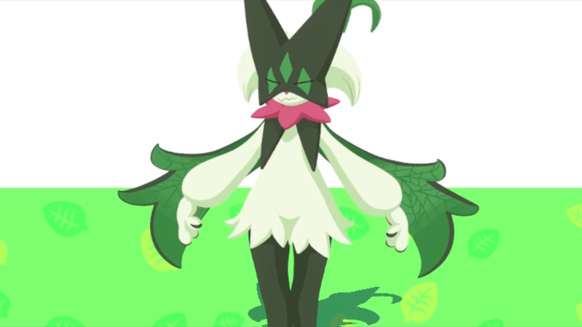
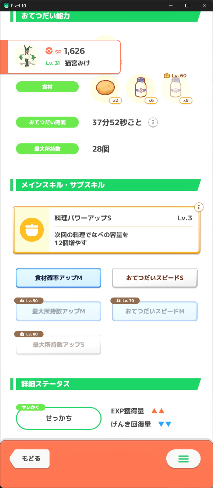

初心者のうちは「食材得意」を最優先で捕まえるべき理由！レシピレベル貯金と愛用マスカーニャの性能解説

1. なぜ「きのみ得意」より「食材得意」を初心者に推すのか？
僕自身、妥協ができない性格だからこそ、ポケモンスリープを始めて半年経った今、声を大にして言いたいことがあります。それは「初心者のうちは、きのみ得意よりも食材得意を最優先で集めるべき」ということです。
ポケスリを始めたばかりの頃は、「きのみの数Sを持ったきのみ得意ポケモン」を集めるのが正義のように感じられがちです。しかし、きのみ得意の理想個体（きのみS＋おてつだいスピードなど）を引くのは途方もない時間がかかります。
全食材の担当ポケモンをある程度揃えてしまえば、毎食しっかり料理を作れるようになり、厳選が一気に楽になります！
さらに重要なのが「レシピレベルという恒久的な資産（貯金）」です。料理を作るたびにレシピレベルが上がっていき、獲得エナジーの基礎倍率が恒久的に底上げされます。これは将来どのフィールドへ行っても腐らない最大の強みです。
2. 食材厳選のリアル：AAAは狙わずにAAXで十分妥協してOK！
食材得意の厳選でよく議論になるのが「食材の並び（AAA / AAB / AAC / ABB）」です。
もちろん理想を言えば、第1〜第3食材がすべて同じ「AAA（オールA）」が一番美しいです。しかし、そんなトリプルAの完璧個体はめったに出ません！
- AAA（理想）: 出たら奇跡。狙いすぎると厳選沼でサブレが枯渇する。
- AAX（AAB / AAC）: 10体ほど捕まえれば十分出会える現実的なライン。Lv.30まで第1食材を大量供給でき、Lv.60で別食材もカバー可能！
- ABB型: 第2・第3食材を専門的にドカ食いさせたい時に非常に重宝する優秀な構成。
僕の楽観的な予想も含めてですが、「10体捕まえればAA型は1体くらい出る」くらいの気持ちで、まずはAAXやABBでサクッと妥協して育成をスタートするのが最も効率的です。
3. レベル上げのプレッシャーが少ない！Lv.60で完結するコスパの良さ
食材得意のもう1つの大きなメリットは、「レベル上限まで無理に上げ続けるプレッシャーが少ないこと」です。
きのみ得意は、ポケモンのレベルが1上がるごとにきのみ1個あたりのエナジーが直接上昇するため、常にキャップ解放（Lv.60 ➔ Lv.65 ➔ Lv.70...）に合わせて育成し続けなければなりません。
しかし食材得意は、第3食材が解放される「Lv.60」まで育ててしまえば、それ以上のレベル上げによる食材数の変化はほとんどありません。Lv.60時点でポケモンの性能がほぼ100%完成するため、リソースを次のポケモンへ回すことができます。
4. ゴールド旧発電所がアツい！御三家とジバコイルを狙うロードマップ
フィールドの進行度と厳選優先度についてですが、将来的には料理エナジーを跳ね上げるために「料理チャンスS（デデンネ）」などが欲しくなってきます。
しかし、デデンネや上位島へ行ける段階になるまでは、焦らずゆっくり様々な食材得意を集めていくのがベストです。特に「ゴールド旧発電所（ゴル旧）」は食材厳選の聖地です：
- パルデア御三家（マスカーニャ、ラウドボーン、ウェーニバル）: 全員食材が極めて優秀！どれが出ても当たり。
- コイル系（ジバコイル）: 上位レシピ作成に必須となる「料理パワーアップS（鍋拡張）」要員。
アンバー渓谷の食材得意（イシズマイ等）に比べても、ゴールド旧発電所で手に入るポケモンたちの汎用性は圧倒的です。
5. スキルの好み：元気自己回復（ウツボット/ハルクジラ）vs 鍋拡張
食材得意の中で僕が特に好きなのが、「自分で元気を回復できるタイプの食材得意」です。
ヒーラー（プクリンやサーナイト）の回復が下振れても、自己回復持ちは1日中元気を80%以上キープしてお手伝いスピードが落ちません。
- トマト・ポテト担当: レントラーよりもウツボット（げんきチャージS）が好き！
- たまご・オイル担当: マスカーニャよりもハルクジラが好き！
とはいえ、普段いいキャンプチケットを使わないプレイヤー層にとっては、鍋拡張スキル持ちや高ステータス個体も非常に重要です。手持ちの食材事情と相談しながら組み替えていくのがポケスリの醍醐味ですね。
6. 【筆者の相棒】ABBマスカーニャの性能と実際の使い心地
ここで、僕が普段から愛用している相棒の「ABBマスカーニャ」の実際のステータスをご紹介します！
どうですか？このマスカーニャ、結構強いでしょう！✨

| 食材構成 | Lv.1 モーモーミルク ×2 Lv.30 ほっこりポテト ×5 Lv.60 ほっこりポテト ×7 |
|---|---|
| サブスキル | Lv.10: おてつだいスピードS Lv.25: 食材確率アップM Lv.50: スキル確率アップS |
| 性格 | おとなしい（スキル発生確率▲▲ / げんき回復量▼▼） |
Lv.25に「食材確率アップM」が付いており、ポテトを解放してからは毎食ポテトを大量に持ってきてくれます！ミルクとポテトはカレー・サラダ・デザートの全ジャンルで活躍できる万能食材なので、ABB型でも本当に使い勝手抜群です。
7. まとめ：まずは食材得意を10体ずつ捕まえて料理基盤を作ろう！
「きのみ得意の理想個体が出ない…」と悩んでいる初心者の皆様は、ぜひ一度「食材得意の厳選」にシフトしてみてください。
- 各食材のポケモンを10体前後捕まえて、食材MやAAX/ABBを確保する
- Lv.30まで育てて第2食材を解放する
- 毎食しっかり料理を作ってレシピレベルをコツコツ貯金する
この流れを作るだけで、毎週のエナジーが安定し、ポケスリが何倍も楽しくなりますよ！